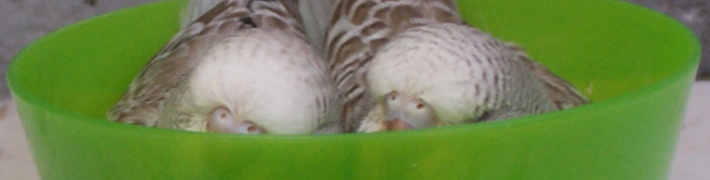
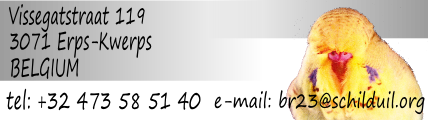

|  | ||
Show resultsSee the SBR partnership show results for recent results.All showsClick on the dates below to go to that show and view the BR23 results 5/24/2014 5/17/2014 4/18/2014 4/5/2014 3/7/2014 8/31/2013 6/9/2013 5/11/2013 4/28/2013 4/19/2013 4/14/2013 3/15/2013 1/27/2013 1/13/2013 8/25/2012 5/19/2012 3/16/2012 3/11/2012 1/28/2012 1/22/2012 12/17/2011 12/4/2011 11/27/2011 11/13/2011 8/27/2011 5/22/2011 4/15/2011 4/9/2011 3/20/2011 3/18/2011 2/27/2011 A few selected shows8/31/2013August 31, 2013 - BGC: Belgian Budgerigar Club Belgian ChampionshipBeginners - Group 11: Best young other colour (fallow, ...): ... Beginners - Group 24: Best old cinnamon: (131GAOC)302 Beginners - Group 31: Best old other colour (fallow, ...): ... Beginners - Group 27: Best opposite old dominant pied: ... Beginners - Group 30: Best opposite recessieve pied/clearbody: (GER280)298 Beginners - Class 4: Young grey cock
Beginners - Class 21: Young cock, other colours (fallow, ...) Beginners - Class 107: Young cinnamon hen, green series
Beginners - Class 203: Old blue cock
Beginners - Class 207: Old cinnamon cock, green series
Beginners - Class 208: Old cinnamon cock, blue series
Beginners - Class 213: Old dominant pied cock, green series
Beginners - Class 215: Old mauve, olive, violet cock
Beginners - Class 221: Old cock, other colours (fallow, ...)
Beginners - Class 303: Old sky blue & cobalt pop
Beginners - Class 319: Old recessive pied hen
8/25/2012 August 25, 2012 - BGC: Belgian Budgerigar Club Belgian ChampionshipBest Old Cock Beginner In Show: (131GAOC)298 Beginners - Group 23: Best old opaline (incl. cinnamon): (131GAOC)298 Beginners - Group 32: Best old pair: (131GAOC)302 (AC62)133 Beginners - Group 10: Best opposite young recessive pied/clearbody: Beginners - Group 22: Best opposite old sky/cobalt/grey normal: (AC133)185 Beginners - Class 7: Young green cinnamon cock
Beginners - Class 8: Young blue cinnamon cock
Beginners - Class 13: Young dominant pied cock Beginners - Class 19: Young recessief pied cock
Beginners - Class 119: Young recessief pied hen
Beginners - Class 21: Young any other colour (slate, fallow, ...) cock
Beginners - Class 121: Young any other colour (slate, fallow, ...) hen
Beginners - Class 201: Old light & dark green cock Beginners - Class 301: Old light & dark green hen
Beginners - Class 303: Old sky blue & cobalt pop
Beginners - Class 206: Old opaline cinnamon cock
Beginners - Class 306: Old opaline cinnamon hen
Beginners - Class 309: Old ino hen
Beginners - Class 214: Old dominant pied hen
Beginners - Class 240: Old pair
8/27/2011 August 27, 2011 - BGC Brabant & Limburg International Regional ShowBest Young Cock Beginner In Show: (131GAOC)298 Beginners - Group 1: Best young light/dark/grey green: (AC110)276 Beginners - Group 2: Best young sky/cobalt/grey: (131GAOC)303 Beginners - Group 3: Best young opaline (incl. cinnamon): (131GAOC)298 Beginners - Group 4: Best young cinnamon: (AC112)286 Beginners - Group 5: Best young opposite sex ino: (480144)287 Beginners - Class 1: young cocks - light and dark green
Beginners - Class 3: young cocks - sky blue and cobalt (incl. yellowface)
Beginners - Class 6: young cocks - opaline-cinnamon
Beginners - Class 7: young cocks - green cinnamon
Beginners - Class 107: young hens - green cinnamon
Beginners - Class 8: young cocks - blue cinnamon (incl. yellowface)
Beginners - Class 108: young hens - blue cinnamon (incl. yellowface)
Beginners - Class 109: young hens - ino
Beginners - Class 203: old cocks - sky blue and cobalt (incl. yellowface)
Beginners - Class 308: old hens - blue cinnamon (incl. yellowface)
Beginners - Class 214: old cocks - blue dominant pied (incl. yellowface)
8/21/2010 August 21, 2010 - BGC Brabant & Limburg 6th International Open ClubshowBeginners - Class 3: Young cock - sky blue and cobalt normal
Beginners - Class 207: Any age cock - all green cinnamons
Beginners - Class 309: Any age hen - lutino and albino
Beginners - Class 215: Any age cock - violet, mauve and olive green
|
||
| http:// | ||